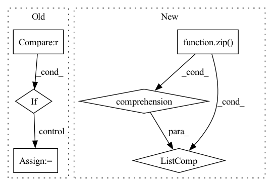

Pattern ID :1329
Before Change
loss = self.criterion(preds, labels).view(-1)
loss_hard = loss[loss > self.thresh]
if loss_hard.numel() < n_min :
loss_hard, _ = loss.topk(n_min)
return torch.mean(loss_hard)
After Change
def forward(self, preds, labels: Tensor) -> Tensor:
if isinstance(preds, list):
return sum([w * self._forward(pred, labels) for (pred, w) in zip(preds, self.aux_weights)] )
return self._forward(preds, labels)
In pattern: SUPERPATTERN
Frequency: 3
Non-data size: 6
Instances Fragment ID: 3886808
Project Name: sithu31296/semantic-segmentation
Commit Name: b68900992fb24dd5166b2b34e3d35d19493d747d
Time: 2021-08-21
Author: sithu31296@gmail.com
File Name: utils/losses.py
M Class Name: OhemCrossEntropy
N Class Name: OhemCrossEntropy
M Method Name: forward(3)
N Method Name: forward(3)
M Parent Class: nn.Module
N Parent Class: nn.Module
M File Name: utils/losses.py
N File Name: utils/losses.py
M Start Line: 25
M End Line: 37
N Start Line: 46
N End Line: 49
Before Change
// X: a list of features from different modalities
def forward(self, X):
if self.split_block == 1 :
ret = self.blocks[0](X)
return ret
// split into multiple time segments, assumes in 2nd dimAfter Change
segment_shapes = [[x.shape[2] // self.split_block] * self.split_block for x in X]
for x, seg_shape in zip(X, segment_shapes):
seg_shape[-1] += x.shape[2] % self.split_block
segmented_x = [torch.split(x, seg_shape, dim=2) for x, seg_shape in zip(X, segment_shapes)]
// apply MSAF
ret_segments = [self.blocks[i]([x[i] for x in segmented_x]) for i in range(self.split_block)]
Fragment ID: 3886802
Project Name: anita-hu/msaf
Commit Name: c784fa99febfbf86ef8aa8f6fa708227a7251ab1
Time: 2020-12-30
Author: anitahu113@gmail.com
File Name: MSAF.py
M Class Name: MSAF
N Class Name: MSAF
M Method Name: forward(2)
N Method Name: forward(2)
M Parent Class: nn.Module
N Parent Class: nn.Module
M File Name: MSAF.py
N File Name: MSAF.py
M Start Line: 131
M End Line: 145
N Start Line: 133
N End Line: 139
Before Change
def forward(self, score, target):
ph, pw = score.size(2), score.size(3)
h, w = target.size(1), target.size(2)
if ph != h or pw != w :
score = F.upsample(
input=score, size=(h, w), mode="bilinear")
loss = self.criterion(score, target)After Change
weights = config.LOSS.BALANCE_WEIGHTS
assert len(weights) == len(score)
return sum([w * self._forward(x, target) for (w, x) in zip(weights, score)] )
class OhemCrossEntropy(nn.Module): Fragment ID: 3886807
Project Name: chenjun2hao/ddrnet.pytorch
Commit Name: 3ce340bc520946fb220e83075f6e015bbe87cfe5
Time: 2019-12-12
Author: hsfzxjy@gmail.com
File Name: lib/core/criterion.py
M Class Name: CrossEntropy
N Class Name: CrossEntropy
M Method Name: forward(3)
N Method Name: forward(3)
M Parent Class: nn.Module
N Parent Class: nn.Module
M File Name: lib/core/criterion.py
N File Name: lib/core/criterion.py
M Start Line: 20
M End Line: 28
N Start Line: 36
N End Line: 42